GUÍA PARA CONFIGURAR TRÁMITES ADMINISTRATIVOS EN EL SIIU
Información de Control Documental
Código: VI-GU-14
Versión: 01 / 29-ABR-2024
Aviso legal institucional: La impresión o copia digital de este documento se considera "COPIA NO CONTROLADA". Solo se garantiza la actualización de la documentación en el sitio oficialhttp://www.udea.edu.co.
Contenido
- Definición
- Contenido
- 2.1. Requisitos para la configuración de permisos de usuarios
- 2.2. Usuarios que intervienen en el proceso
- 2.3. Ingreso al SIIU
- 2.4. Configuración trámites administrativos
- 2.4.1. Filtros de búsqueda y selección de convocatoria/proceso
- 2.4.2. Agregar y parametrizar tipos de trámite administrativo
- 2.4.3. Configuración de Niveles Administrativos (Avalar y Aprobar)
- 2.4.4. Asociación de Centros de Gestión
- 2.4.5. Activación y Resumen del Trámite
- 2.4.6. Inactivación de la Configuración del Trámite
- Nota de cambio
- Registro de Control y Firmas
1. Definición
Este documento se ha elaborado con el fin de ayudar y capacitar los administradores del Sistema de Información para la Investigación Universitaria – SIIU. En la configuración de permisos de usuarios. Dado lo anterior se aclara que esta guía no hace parte de la normativa universitaria y solamente se debe utilizar como una herramienta que orienta los pasos a seguir en el aplicativo.
2. Contenido
2.1 Requisitos para la configuración de permisos de usuarios
- El usuario con rol de administrador debe estar registrado en el portal institucional y tener acceso a SIIU.
- El usuario con rol de administrador debe tener acceso a la opción de permisos.
2.2 Usuarios que intervienen en el proceso
- Usuario con rol Administrador Proyecto.
2.3 Ingreso al SIIU
El investigador principal o responsable del proyecto (o usuario administrador) debe autenticarse en el portal de la Universidad de Antioquia, http://www.udea.edu.co, buscar la opción aplicaciones y entre ellas elegir el SIIU, así:
- Ingresa al portal de la Universidad:
http://www.udea.edu.co, en el encabezado seleccione Ingresar >> Iniciar sesión (Ver figura 1).
 Figura 1 - Ingreso al portal de la Universidad de Antioquia
Figura 1 - Ingreso al portal de la Universidad de Antioquia
- Aparece pantalla para ingresar su usuario y contraseña, seleccione No soy un Robot (el sistema le puede pedir realizar validaciones) finalmente presione clic en el botón CONECTAR. (Ver figura 2).
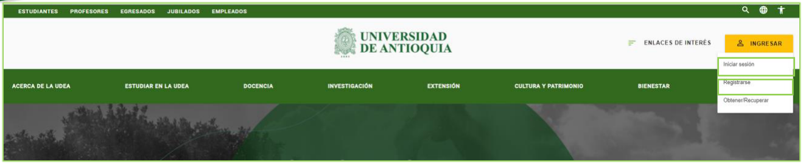
Figura 2 - Conectar al portal- Presione clic en la opción Enlaces de Interés y seleccione Mis aplicaciones, así:
Enlaces de interés → Mis aplicaciones. (Ver figura 3).
 Figura 3 - Enlaces de interés
Figura 3 - Enlaces de interés
- Se abrirá una ventana con las aplicaciones de la Universidad; seleccione SIIU. (Ver figura 4).
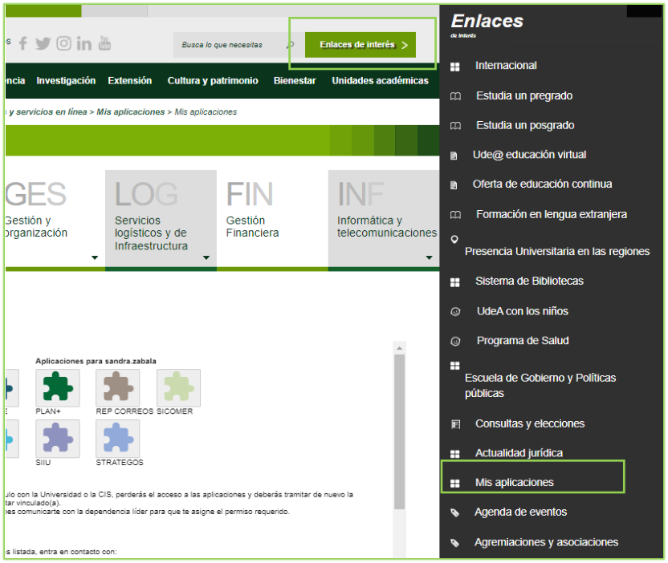
Figura 4 - Seleccione SIIU> Se abre una nueva ventana con la aplicación SIIU. Si la ventana no abre inmediatamente, es necesaria la configuración de ventanas emergentes en el navegador y seleccionar la opción que autorice el SIIU.
2.4 Configuración trámites administrativos
Estando en el SIIU ingrese por el menú Convocatorias luego por la opción Flujo procesos administrativos y novedades, tal como muestra la figura 5.
Ruta: Convocatorias / Flujo procesos administrativos y novedades
 Figura 5 - Convocatorias/ Flujo procesos administrativos y novedades
Figura 5 - Convocatorias/ Flujo procesos administrativos y novedades
Filtros de búsqueda y selección de convocatoria/proceso
El sistema abre formulario con los campos: - Tipo de proyecto: con las opciones Investigación, Extensión, Posgrados. - Tipo de trámite: habilita las diferentes solicitudes administrativas que se pueden realizar por SIIU. - Mostrar inactivos: casilla de verificación (check) para observar los procesos que ya se encuentran inactivos. - Botones Consultar y Limpiar. (Ver figura 6).
 Figura 6 - Filtro de búsqueda
Figura 6 - Filtro de búsqueda
Al seleccionar el tipo de proyecto se habilitan los botones de selección: - Convocatoria - Proceso de selección
Para indicar al sistema el tipo de trámite que desea consultar o configurar. (Ver figura 7).
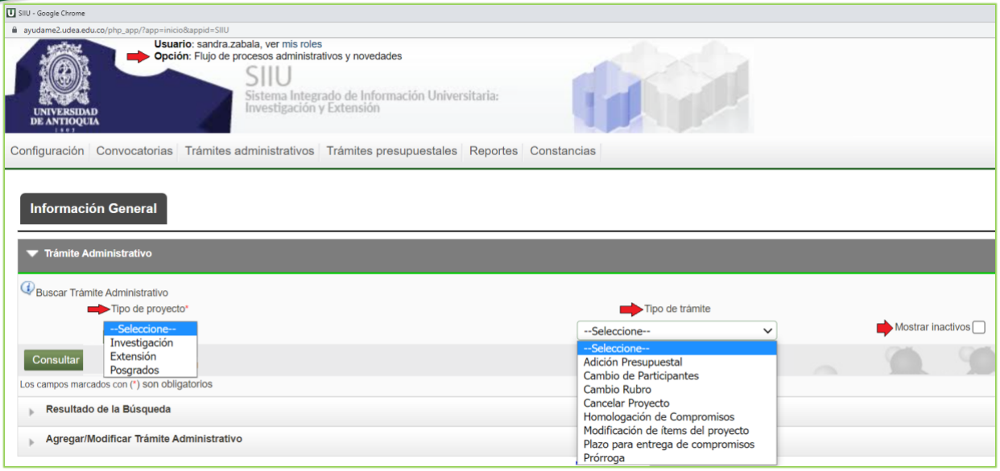
Figura 7 - Convocatoria o proceso de selección- Caso Convocatoria: Elija la opción convocatoria; observe que se despliega la lista de convocatorias disponibles. Elija la convocatoria que requiere para la configuración del trámite administrativo. (Ver figura 8).
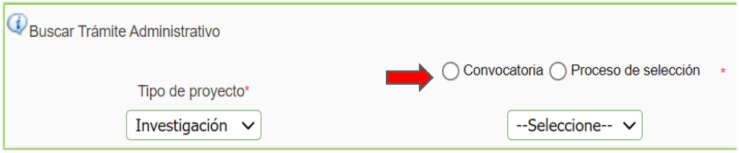
Figura 8 - Listado de convocatorias- Caso Proceso de selección: De igual manera sucede al seleccionar la opción proceso de selección; el sistema lista los procesos de selección habilitados para la configuración del trámite administrativo. (Ver figura 9).
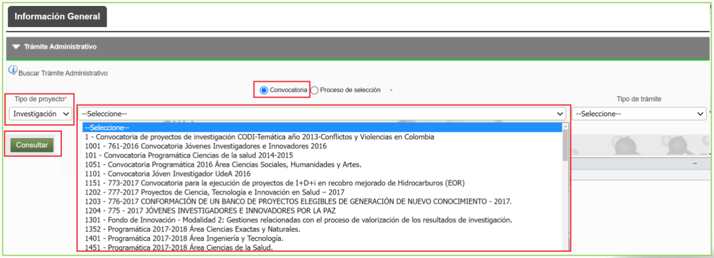
Figura 9 - Listado proceso de selecciónAgregar y parametrizar tipos de trámite administrativo
Cuando se presiona Consultar y el sistema muestra el mensaje "No se obtuvieron registros para la consulta especificada", significa que el trámite no ha sido configurado aún. En este caso, presione el icono + que aparece al costado derecho de la pantalla. (Ver figura 10).
Definición de Novedad en el sistema
Una "Novedad" se refiere a: cambios (en tiempo, presupuesto, personas o compromisos de un proyecto) que ya fueron aprobados por (co)financiador(es) externos.
Figura 10 - Icono para agregar trámite administrativo
Una vez se ha presionado el icono +, el sistema habilita un nuevo formulario donde se seleccionan los trámites que se desean configurar, el número de veces sin pasar por la vicerrectoría, además de la descripción del trámite.
En las figuras 11 y 12 observe que el campo Tipo de trámite muestra todos los trámites administrativos configurados en SIIU: - Adición Presupuestal - Cambio de Participantes - Cambio Rubro - Cancelar Proyecto - Homologación de Compromisos - Modificación de ítems del proyecto - Plazo para entrega de compromisos - Prórroga
Pasos de diligenciamiento:
1. Seleccione con un check cada uno de los tipos de trámite que desea configurar.
2. Asigne el Número de veces sin pasar por Vicerrectoría (por ejemplo: 3).
3. Indique una Descripción para el trámite (por ejemplo: solicitud administrativa).
4. Presione la opción Guardar. (Ver figuras 11 y 12).
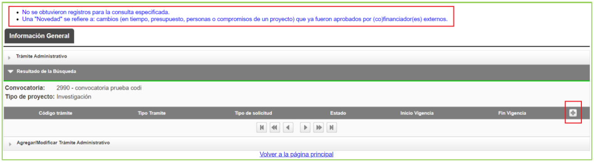
Figura 11 - Resultado de la búsqueda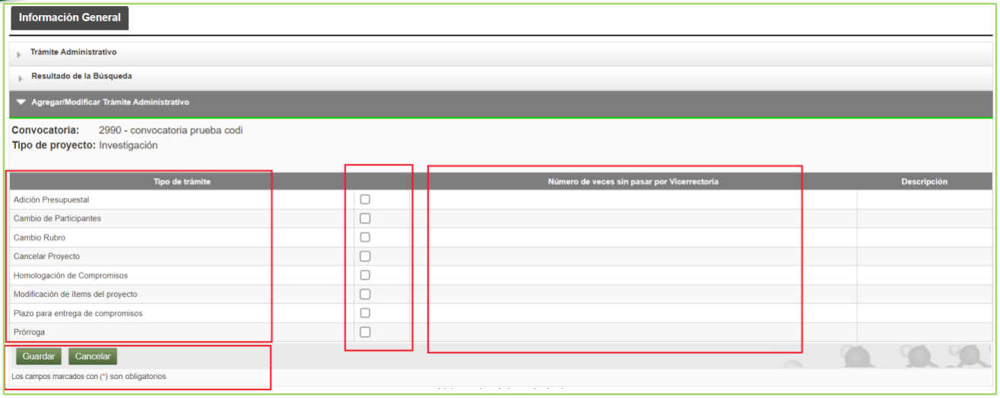
Figura 12 - Diligenciar configuraciónUna vez se presiona el botón Guardar, el sistema genera el mensaje "Creado exitosamente" y habilita los botones Activar y Siguiente. Presione el botón Siguiente para dirigirse a la pestaña Nivel administrativo. (Ver figura 13).
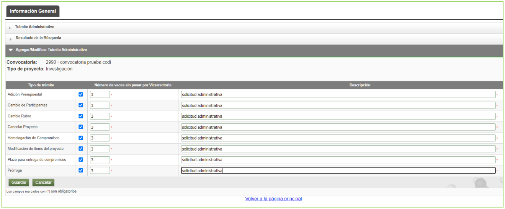
Figura 13 - Botones Activar y SiguienteConfiguración de Niveles Administrativos (Avalar y Aprobar)
Una vez se ha presionado la opción siguiente, el sistema se dirige a la pestaña Nivel Administrativo. Presione el icono + para configurar las acciones de avalar y aprobar el trámite. (Ver figura 14).
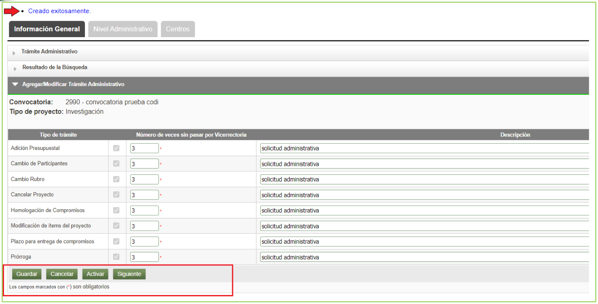
Figura 14 - Pestaña Nivel administrativoAl presionar el icono +, el sistema abre un nuevo formulario con los siguientes campos:
| Campo | Detalle |
|---|---|
| Secuencia | Por defecto aparece en uno (1). |
| Nivel administrativo | Lista desplegable que contiene todas las unidades académicas / dependencias (Centro de Docencia, Centro de Extensión, Centro de Investigación, Comité, Comité Ética, Dependencias en PlanView equivalentes a los centros de investigación, Dirección, Escuela, Facultad, Instituto, QA prueba, Rectoría, Unidad Académica Posgrados, etc.). |
| Recomendación | Lista desplegable que contiene las opciones Aprobar o Avalar. |
| Omitir | Casilla para omitir la configuración del trámite. |
| Notas | Agregue información del trámite que está configurando, ya sea para avalar o aprobar. |
| Guardar | Almacena el registro. |
| Cancelar | Cancela la opción. |
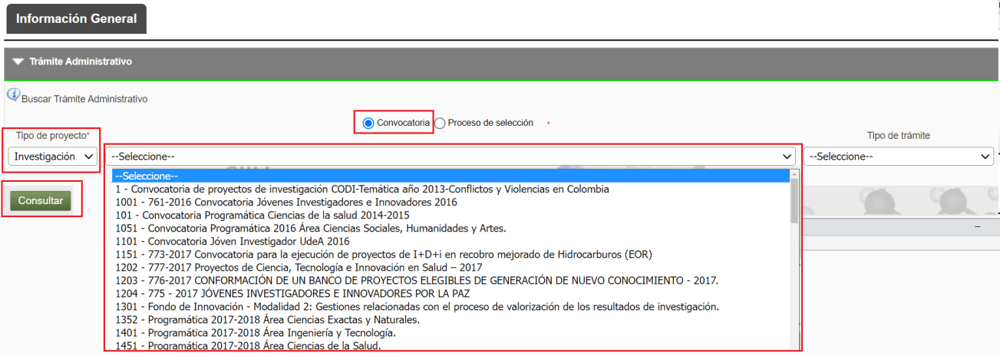
Figura 15 - Agregar Nivel administrativoDiligencie los campos del formulario de acuerdo con la configuración requerida para los trámites administrativos: - Regla general: El centro avala mientras que la vicerrectoría aprueba. - Caso especial: Un solo nivel donde la vicerrectoría aprueba directamente (por ejemplo, cupos de Joven Investigador o proyectos inscritos).
Esta opción depende del tipo de proyecto o convocatoria que se esté configurando. (Ver figura 16).
Figura 16 - Configuración del trámite
Paso 1: Configurar Nivel Aval (Centro de Investigación)
En las figuras 17 y 18 se muestra la configuración del trámite administrativo para el proceso de avalar la solicitud administrativa, donde el centro es quien realiza el aval:
- Secuencia: 1
- Nivel Administrativo: Centro de Investigación
- Recomendación: Avalar
- Notas: Avalar proyecto
- Presione Guardar para continuar.
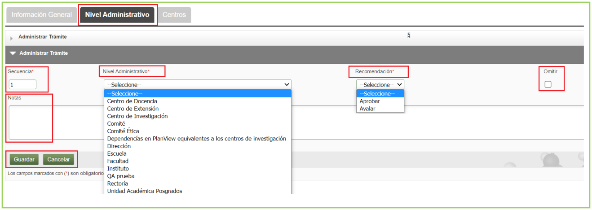
Figura 17 - Centro AvalaFigura 18 - Centro Avala
Una vez guardado el registro de aval, el sistema abre una nueva opción para seleccionar la instancia administrativa que va a realizar el proceso de avales a las solicitudes. (Ver figura 19).
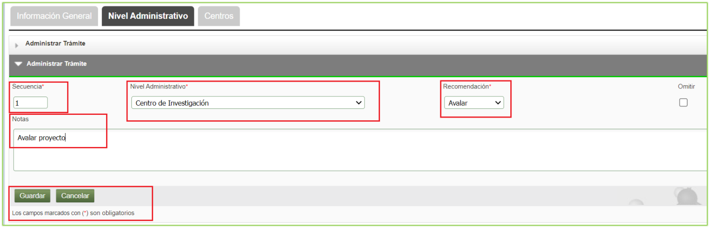
Figura 19 - Seleccionar instancia administrativaDespliegue la lista de la opción Seleccione, y el sistema mostrará todos los centros de investigación o extensión, según el caso: - Se puede seleccionar un centro específico, o - Se pueden seleccionar todos los centros eligiendo la opción Todos, de manera que todos los centros queden habilitados para realizar el proceso de aval. - Presione el botón Agregar. (Ver figura 20).
Figura 20 - Todos los centros
Al seleccionar todos los centros, el sistema presenta la información en los campos:
- Código Instancia
- Nombre Instancia
- Acción de eliminación (icono x) para retirar cualquier centro no requerido.
- Presione el botón Guardar para continuar. (Ver figura 21).
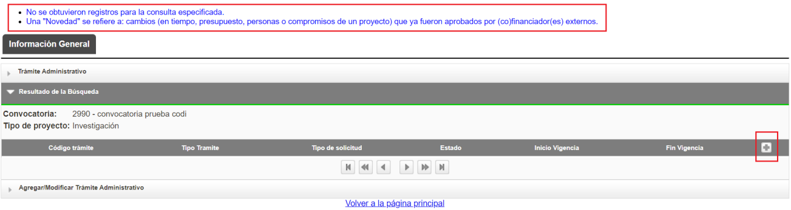
Figura 21 - Seleccionar centrosContinuación o edición en caso de interrupción
Si el sistema se cierra por inactividad o debe continuar luego el proceso, realice la consulta de acuerdo con los filtros de búsqueda descritos anteriormente. Al consultar el trámite aparece el icono lápiz, el cual le permitirá editar el trámite y continuar con la configuración. (Ver figuras 22 y 23).
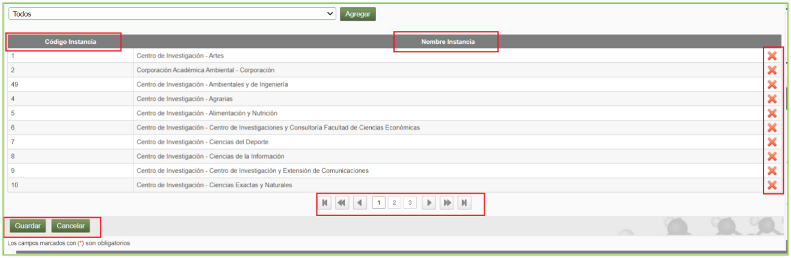
Figura 22 - Resumen de la configuración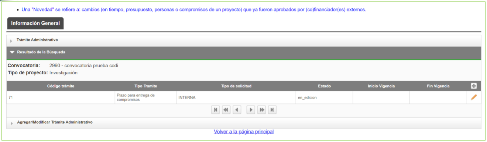
Figura 23 - Editar trámite administrativoPaso 2: Configurar Nivel Aprobación (Vicerrectoría)
Para agregar una nueva recomendación para aprobar:
1. Presione el icono +.
2. Observe que ha aumentado el valor en el campo Secuencia (pasa a 2).
3. En el campo Nivel administrativo, seleccione Vicerrectoría.
4. En el campo Recomendación, seleccione Aprobar.
5. En Notas, ingrese la indicación correspondiente (ejemplo: Aprobar).
6. Presione Guardar. (Ver figura 24).
Figura 24 - Aprobar trámite
Una vez guardada la recomendación de Aprobación, el sistema abre un nuevo campo para seleccionar la instancia administrativa que realizará el proceso de aprobación. Aparecen las siguientes opciones: - Vicerrectoría de Extensión - Vicerrectoría Administrativa - Vicerrectoría de Docencia - Vicerrectoría de Investigación
Seleccione de acuerdo con su necesidad y luego presione Guardar. (Ver figuras 25 y 26).
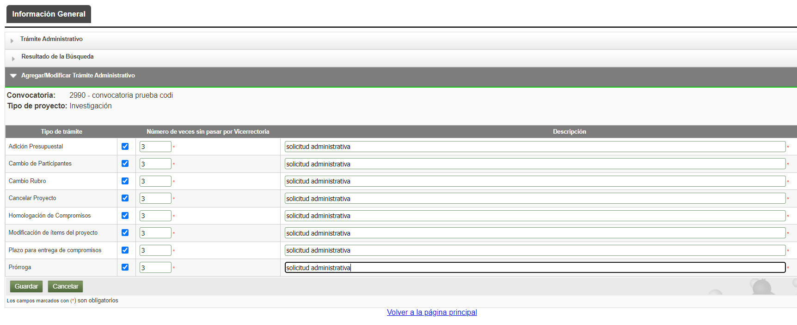
Figura 25 - Instancia que apruebaUna vez seleccionada la instancia, identifique que aparece el código de la instancia y el nombre de la instancia definida para la aprobación. (Ver figura 26).
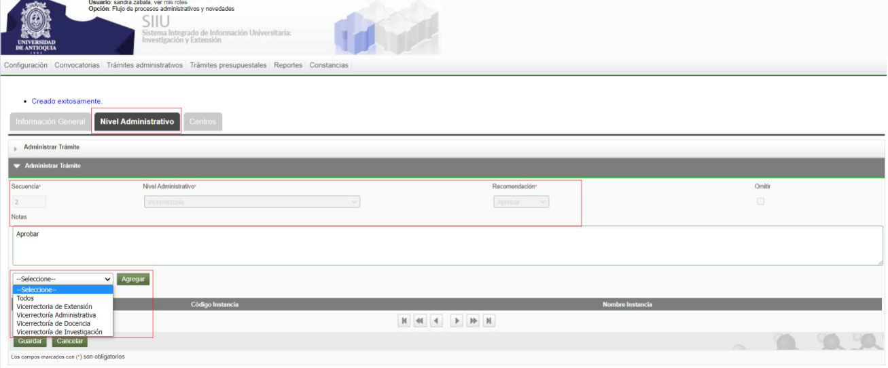
Figura 26 - Nombre instancia que apruebaAl presionar el botón Guardar, el sistema muestra un resumen de la configuración en la pestaña Nivel administrativo con las recomendaciones definidas de acuerdo con la configuración establecida para cada instancia. (Ver figura 27).
Criterio Operativo Institucional
Normalmente el Centro Avala y la Vicerrectoría Aprueba las solicitudes administrativas. Puede suceder, como en el caso del cupo de Joven Investigador o proyectos inscritos, que la Vicerrectoría realiza el proceso de aprobación sin pasar por el centro para avalar; para este caso específico solo se configura la recomendación Aprobar.
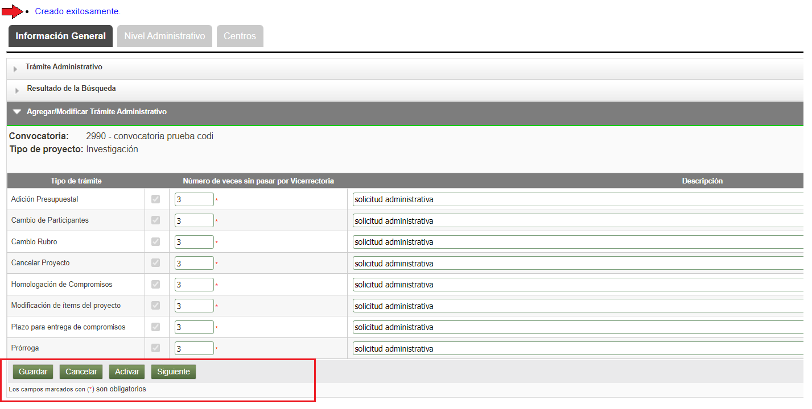
Figura 27 - Resumen de recomendaciones x instanciasAsociación de Centros de Gestión
Una vez guardados y agregados los niveles administrativos, presione la opción Siguiente para dirigirse a la pestaña Centros. Allí podrá seleccionar el centro o centros que podrán utilizar la configuración del trámite administrativo para la solicitud requerida; de esta manera, el investigador principal podrá tramitarla.
En el campo Centro administrativo: - Seleccione la opción Todos los de investigación, o - Seleccione Todos los de Extensión, o - Seleccione uno o varios centros específicos de la lista desplegable. - Finalmente presione Agregar. (Ver figura 28).
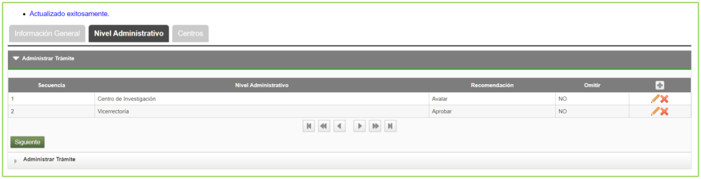
Figura 28 - Pestaña CentrosAl seleccionar la opción Todos los centros, nótese que en la columna Nombre aparece la lista completa de los centros de investigación o extensión correspondientes. A su vez, aparece una columna con el icono x, tal como muestra la figura 29, la cual indica que puede eliminarse un centro individualmente si no aplica.
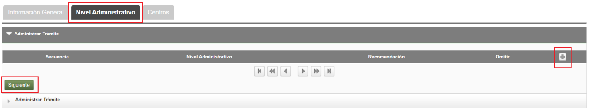
Figura 29 - Todos los centrosActivación y Resumen del Trámite
Una vez configurados los centros: 1. Diríjase nuevamente a la pestaña Información general. 2. Verifique que tenga la información completa en la ventana. 3. Presione la opción Guardar. 4. Luego presione el botón Activar. De esta manera queda configurado y disponible el proceso de Trámites administrativos para que el investigador principal pueda realizar solicitudes administrativas de acuerdo a su necesidad. (Ver figura 30).
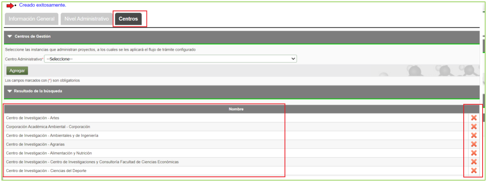
Figura 30 - Activar configuraciónUna vez activado el trámite, el sistema muestra el resumen con las siguientes columnas:
| Columna | Detalle |
|---|---|
| Código de trámite | Código del trámite configurado. |
| Tipo de trámite | Nombre del trámite configurado. |
| Tipo de solicitud | Interna o Novedad (Aplica para inscritos). |
| Estado | Estado del trámite: Activo o Inactivo. |
| Inicio de vigencia | Fecha en que se activó el trámite. |
| Fin Vigencia | Campo vacío (o fecha límite si aplica). |
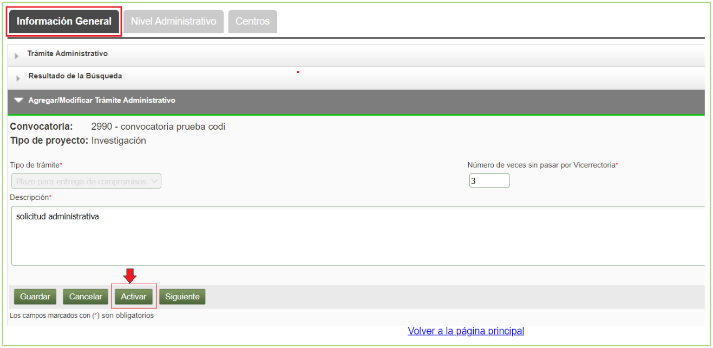
Figura 31 - Resumen de trámite configuradoInactivación de la Configuración del Trámite
Si en la pantalla de resumen descrita anteriormente se presiona el icono lápiz, el sistema abre una nueva ventana con el botón Inactivar, tal como muestra la figura 32.
Advertencia sobre Inactivación
Tenga en cuenta que si presiona la opción Inactivar, la configuración deja de estar disponible en el sistema y se deberá crear una nueva configuración del trámite para reemplazar el trámite inactivo. (Ver figura 32).
Figura 32 - Inactivar
Una vez terminado el proceso de configuración del trámite administrativo, el investigador principal o coordinador del proyecto podrá realizar la solicitud del trámite administrativo y podrá enviarla al centro para su aval o a la vicerrectoría para su aprobación, según el caso configurado.
> Todas las imágenes corresponden a la configuración general de proyectos del trámite de solicitudes administrativas.
3. Nota de cambio
- No aplica para la primera versión.
Registro de Control y Firmas
| Rol | Nombre | Cargo / Dependencia | Fecha |
|---|---|---|---|
| Elaboró | Sandra Patricia Zabala Orrego | Contratista, Vicerrectoría Investigación | 16-FEB-2024 |
| Revisó | Kerlin Yohana Bedoya Agudelo | Analista de Procesos, División de Arquitectura de Procesos | 29-ABR-2024 |
| Aprobó | Gloria Valencia Bustamante | Asistente, Vicerrectoría de Investigación | 29-ABR-2024 |